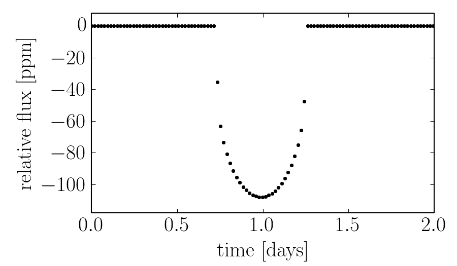

Getting started¶
Installation¶
You can install the most recent stable version of transit using PyPI or the development version from GitHub.
Prerequisites¶
Whichever method you choose, you’ll need to make sure that you first have Boost installed. On Linux:
sudo apt-get install libboost-dev
On Mac:
brew install boost
Note
Chances are high that transit won’t work on Windows right now because it hasn’t been tested at all but feel free to try it out at your own risk!
You’ll also need a working scientific Python installation (including NumPy). I recommend the Anaconda distribution if you don’t already have your own opinions.
Stable Version¶
The simplest way to install the most recent stable version of transit is using pip:
pip install transit
If you installed Boost in a strange place, specify that location by running (sorry to say that it’s pretty freaking ugly):
pip install transit \
--global-option=build_ext \
--global-option=-I/path/to/boost
Development Version¶
To get the source for the development version, clone the git repository:
git clone https://github.com/dfm/transit.git
cd transit
Then, install the package by running the following command:
python setup.py install
If installed Boost in a non-standard location, you can specify the correct path using the install command:
python setup.py build_ext -I/path/to/boost install
Testing¶
To run the unit tests, install nose and then execute:
nosetests -v transit.tests
All of the tests should (of course) pass. If any of the tests don’t pass and if you can’t sort out why, open an issue on GitHub.
A Simple Example¶
In this example, we’ll build a simple Earth-like transit and plot the result:
import transit
import numpy as np
import matplotlib.pyplot as pl
# Build the transiting system.
s = transit.System(transit.Central())
body = transit.Body(r=0.009155, period=365.25, t0=0.99, b=0.2, e=0.0167)
s.add_body(body)
# Compute the light curve integrated over a Kepler long cadence
# exposure time.
texp = 1626.0 / 86400.0
t = np.arange(0, 2, texp)
f = s.light_curve(t, texp=texp)
# Plot the results
pl.plot(t, (f-1) * 1e6, ".k")
This should produce a figure that looks something like this:
For a list of all the available options, see API documentation.